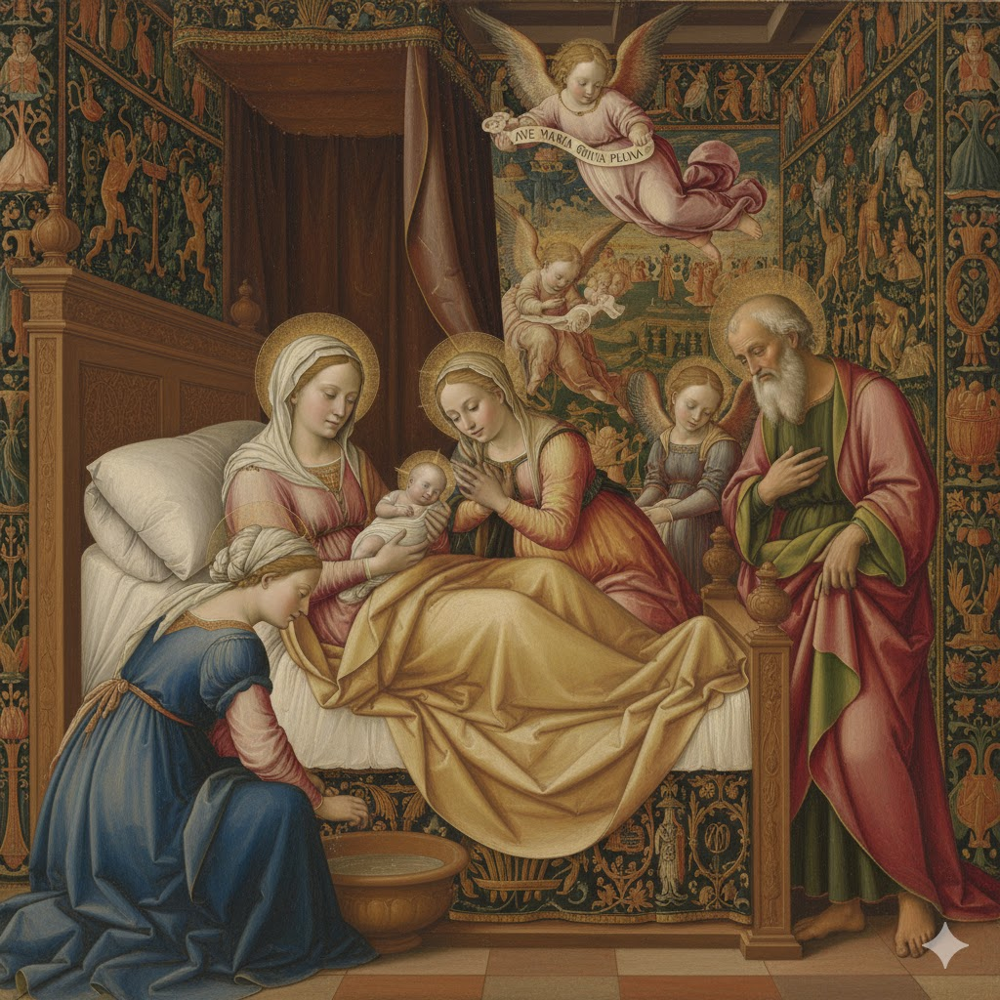

← Inicio
Rosarios
Elige cómo quieres rezar hoy.
Rosario tradicional
Misterios gozosos, dolorosos, gloriosos y luminosos
Rosario de exequias
Por los fieles difuntos

Rosario de aurora luciente
Por su natividad
Coronilla de la Misericordia
Con el rezo guiado paso a paso